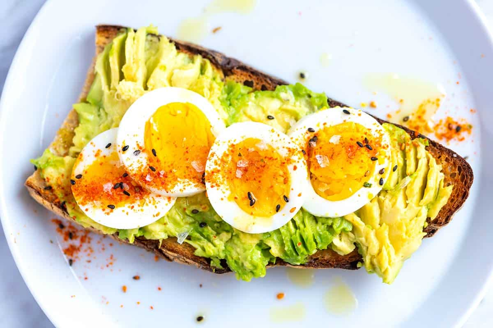

4-Ingredient Egg Avocado Toast

Description
This simple recipe will have you feeling full and refreshed when in a time crunch
Ingredients
- 1 slice sourdough bread, toasted
- 1/2 cup mashed Haas avocado
- 1 large hard boiled egg
- 1 teaspoon Everything Bagel Seasoning
Steps
- Step 1: Smear mashed avocado on toast. Sprinkle with everything bagel seasoning.
Top with egg. Season with salt and pepper.
- Step 2: Enjoy!
Home